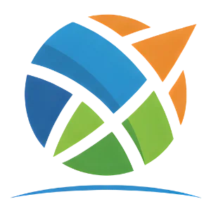
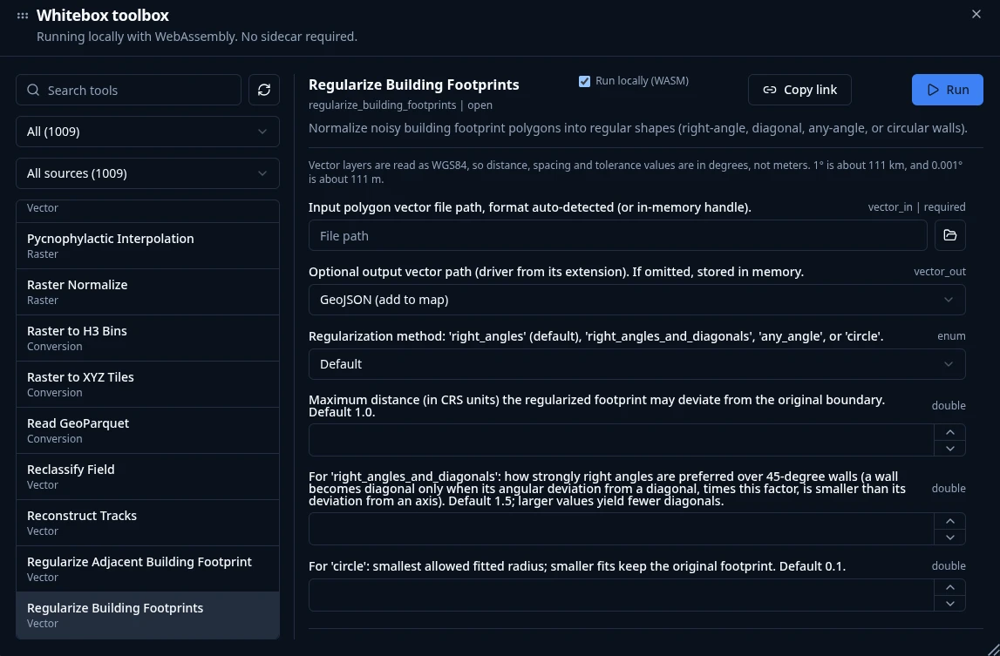
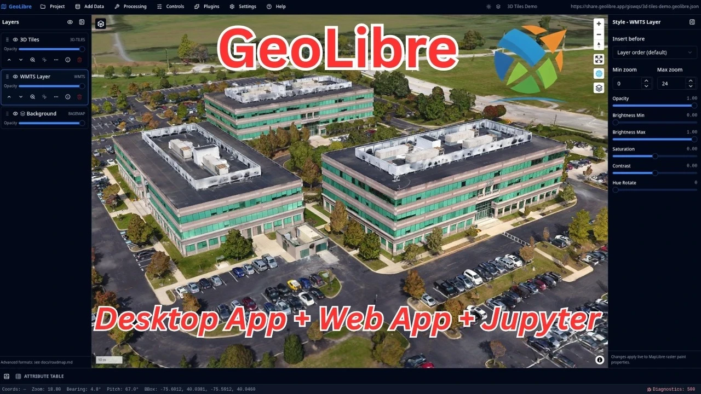

Why LiDAR in the browser
What is hard today, and what changed
GeoLibre and Whitebox
How geoprocessing runs locally on WebAssembly
Live demo
Find LiDAR, build a DEM, analyze terrain, share it
LiDAR is published by many agencies and projects, each with its own portal, tiling scheme, and naming. Knowing that coverage exists is half the work.
Point clouds are large. Pulling whole tiles to study one watershed or one campus means gigabytes moved before you see a single point.
Desktop LiDAR and terrain tools need installers, licenses, plugins, and matching versions. That is a real barrier in a class, a workshop, or a locked-down laptop.
A chain of GUI clicks is hard to repeat or share. A colleague cannot easily rerun your workflow on a different area.
COPC and COG files sit on plain object storage. The browser reads only the byte ranges it needs, so you can open a huge dataset by fetching a small part of it.
Compiled native code, such as the Whitebox geoprocessing engine, runs in the browser at near-native speed. The compute moves to the data's destination: your device.
STAC and public LiDAR indexes tell you what exists for any area, and return links you can open directly.
Discover, stream, and process LiDAR without installing anything or uploading anything.
The browser is the GIS, the file system is object storage, and the processing happens on your machine.
| Format | What it is | Why it suits the browser | Typical use |
|---|---|---|---|
| LAS / LAZ | The standard point cloud file, LAZ being compressed | Universal, but usually read start to finish | Archival tiles, exchange |
| COPC | A LAZ file organized as a spatial octree | Range requests fetch just the nodes in view or in your area | Streaming and clipping point clouds |
| EPT | Entwine Point Tile, an octree of many files | Same idea, served as a directory of tiles | Large public LiDAR collections |
| COG | GeoTIFF with internal tiles and overviews | Reads only the window and zoom level needed | DEMs, hillshades, slope rasters |
| STAC | A JSON catalog and search API | Query by place and time, no portal needed | Finding datasets |
MapLibre GL for the map, deck.gl for 3D and point clouds, DuckDB for SQL, and cloud-native formats read natively. MIT licensed.
Data catalogs, analysis tools, and the USGS LiDAR plugin are plugins, so capabilities grow without changing the core app.

github.com/jblindsay/whitebox_next_gengithub.com/opengeos/whitebox-wasm), it loads as part of the page and runs in your browser's sandbox.| Category | Tools | Examples |
|---|---|---|
| LiDAR | 66 | thinning and conversion, ground filtering, classification, DEM/DSM gridding, point statistics |
| Terrain | 99 | slope, aspect, hillshade, curvature, viewshed, relative position |
| Hydrology | 100 | depression filling, flow direction, accumulation, watersheds, streams |
| Raster | 255 | algebra, filters, reclassification, zonal statistics |
| Conversion | 49 | write results to COG, GeoParquet, PMTiles |
Because LiDAR, terrain, and hydrology tools live in one toolbox, the output of one step is the input of the next, with no format conversion or software switch in between.
Sensitive or pre-release surveys stay on the machine. There is no server that receives your point cloud.
A student, a field team, or a city office needs only a browser. Setup time in a workshop drops to a URL.
No server to run, scale, or pay for. The user's own CPU does the work, and the host only serves static files.
A project is a file that opens the same way on a laptop, a lab machine, or a phone.
Tools run with explicit parameters, and the same workflow can be rebuilt with Model Builder or scripted from Python.
Discover
Pick an area and find available LiDAR
Access
Clip, stream COPC, thin and convert
Visualize
Point cloud in 3D, by elevation or class
Generate
Ground and first returns to DTM and DSM
Analyze
Hillshade, slope, hydrology, then export
web.geolibre.app to follow along on your own laptop. Nothing to sign in to.Watch the network panel size, not the file size of the full collection. The ratio of what exists to what we fetched is the point of cloud-optimized formats.

nearest_center, lowest, or highest.lowest is not a spike below the ground..las, .laz, or .copc.laz.| Input | Points | Setting | Kept | Check |
|---|---|---|---|---|
| 3DEP tile, 728 × 126 m | 1,610,378 | 10 m, lowest | 549 | 549 occupied 10 m cells |
| 3DEP tile, 16.8M points | 16,834,724 | 1 m, lowest | 999,973 | 999,973 occupied 1 m cells (about 30 s) |
Run LiDAR TIN Gridding with classes 1,7,18 excluded. On the demo tile that is 680,867 ground points, gridded to a 2 m DTM in about a second.
Set returns to first and exclude noise (7,18): 1,066,968 points give a DSM that includes canopy and buildings.
Run Subtract with the DSM first: a normalized surface, the height of trees and buildings above ground.
Match it to point density. A resolution much finer than the data supports only adds empty or interpolated cells.
3DEP files declare a compound CRS (UTM plus NAVD88 height). The gridded raster can take the height code (EPSG:5703) and never appear. Run Assign Projection Lidar with the horizontal code (26912 here) first.
| Product | What it tells you | Typical next use |
|---|---|---|
| Hillshade | Shaded relief that makes landforms readable | Basemap under other layers |
| Slope and aspect | Steepness and facing direction of every cell | Landslide susceptibility, solar exposure |
| Curvature | Where the surface is convex or concave | Ridges, channels, erosion patterns |
| Fill depressions | A DEM that drains correctly | Input to hydrologic analysis |
| Flow accumulation | Where water concentrates | Streams, watersheds, flood paths |
| Viewshed | What can be seen from a point | Siting, visibility studies |
.tif: with the default name the result does not reach the map.Save the DEM and derived layers as COG. Export a point cloud as LAS, LAZ, or COPC from its layer menu.
A GeoLibre project file captures layers, order, and styling. Open it again on any device.
Wire the same tools in Model Builder to rerun the workflow on a different area with different inputs.
The deliverable is a link and a file, not a software environment.
The same workflow is available from Python (pip install geolibre) for notebooks and batch runs.
WebAssembly in a browser tab has a hard memory ceiling. Clip to an area of interest, or thin first: Grid Thin streams a 16.8M-point tile.
A country-scale batch is better run with a desktop or server pipeline. The browser excels at interactive, area-scale work.
Processing uses your own CPU, so a laptop is faster than a phone. Large rasters take longer on older hardware.
The GeoLibre desktop app uses the same tools when you need more resources, with the same project files.
Web app web.geolibre.app
Docs geolibre.app
Source github.com/opengeos/GeoLibre
Examples share.geolibre.app
Python pip install geolibre
Plugins plugins.geolibre.app
Licence MIT
Cite doi.org/10.5281/zenodo.20785400